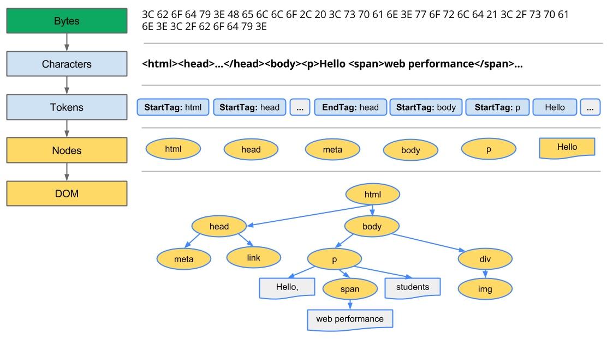
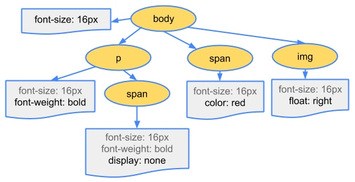
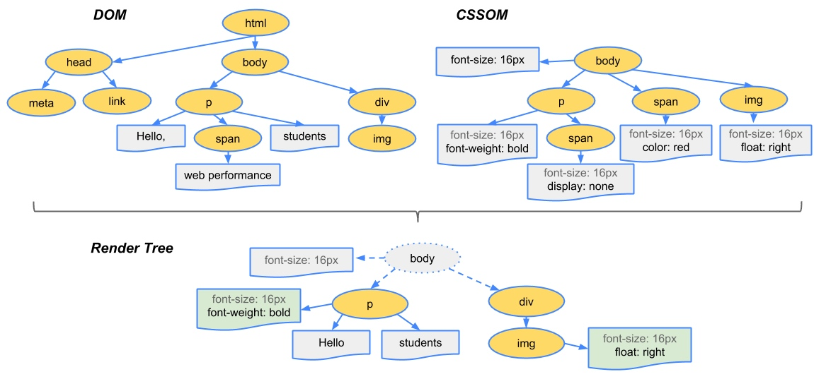

Bytes -> Characters -> Tokens -> nodes -> Object Model
HTML markup is transformed into a Document Object Model (DOM), CSS markup is transformed into a CSS Object Model (CSSOM)
DOM and CSSOM are independent data structures
Document Object Model (DOM)

CSS Object Model (CSSOM)
While the browser was construncting the DOM of our simple page, it encoutered a link tag in the head section of the document referencing an external CSS stylesheet: style.css. Anticipating that it will need this resource to render the page, it immediately dispatches a request for this resource.
Just as with HTML, we need to convert the received CSS rules into something that the browser can understand and work with.

The first step is for the browser to combine the DOM and CSSOM into a "render tree" that captures all the visible DOM content on the page, plus all the CSSOM style information for each node.

To construct the render tree, the browser roughly does the following:
- Starting at the root of the DOM tree, traverse each visible node.
- Some nodes are not visible at all, and are omitted since they are not reflected in the rendered output
- Some nodes are hidden via CSS and are also omitted from the render tree
- For each visible node find the appropriate matching CSSOM rules and apply them
- Emit visible nodes with content and their computed styles.
'visibility: hidden' is different from 'display: none'
'visibility: hidden' makes the element invisible, but the element still occupies space in the layout
'display: none' removes the element entirely from the render tree such that the element is invisible and is not part of layout
By default, CSS is treated as a render blocking resource
Media types and media queries allow us to mark some CSS resources as non-render blocking
All CSS resources, regardless of blocking or non-blocking behavior, are downloaded by the browser
<link href="style.css" rel="stylesheet">
<link href="style.css" rel="stylesheet" media="all">
<link href="portrait.css" rel="stylesheet" media="orientation:portrait">
<link href="print.css" rel="stylesheet" media="print">
- The first declaration is render blocking and matches in all conditions.
- The second declaration is also render blocking: “all” is the default type and if you don’t specify any type, it’s implicitly set to “all”. Hence, the first and second declarations are actually equivalent.
- The third declaration has a dynamic media query which will be evaluated when the page is being loaded. Depending on the orientation of the device when the page is being loaded, portrait.css may or may not be render blocking.
- The last declaration is only applied when the page is being printed, hence it is not render blocking when the page is first loaded in the browser.
Adding interactivity with JavaScript
First, our script is executed at the exact point where it is inserted in the document. When the HTML parser encounters a script tag, it pauses its process of constructing the DOM and yields control over to the JavaScript engine; once the JavaScript engine has finished running, the browser then picks up from where it left off and resumes the DOM construction.
In other words, our script block can't find any elements later in the page because they haven't been processed yet.
Or, executing our inline script blocks DOM construction, which will also delay the initial render.
JavaScript execution can lead to significant delays in how quickly the browser can process and render our page on the screen:
- The location of the script in the document is significant
- DOM constrction is paused when a script tag is encountered and until the script has finished executing
- JavaScirpt can query and modify the DOM and CSSOM
- Javascript execution is delayed until the CSSOM is ready
Parser Blocking vs. Asynchronous JavaScript
By default, JavaScript execution is 'parser blocking': when the browser encounters a script in the document it must pause DOM construction, hand over the control to the JavaScript runtime and let the script execute before proceeding with DOM construction.
In the case of an external JavaScript file the browser will also have to pause and wait for the script to be fetched from disk, cache, or a remote server, which can add tens of thousands of milliseconds of delay to the critical rendering path.
Adding the async keyword to the script tag tells the browser that it should not block the DOM construction while it waits for the script to become available.
<script src="app.js" async></script>